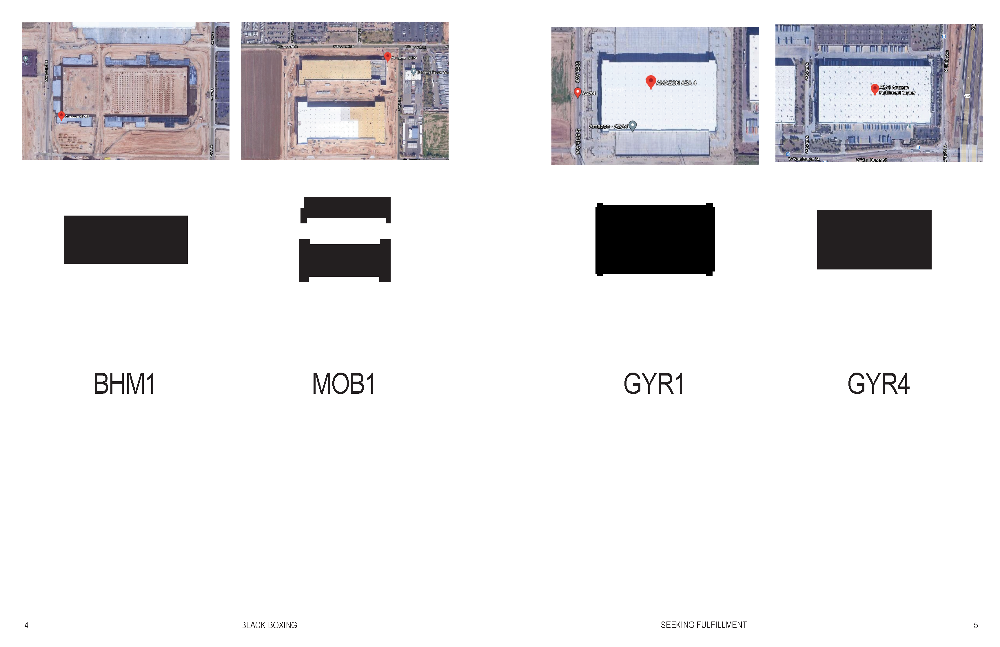
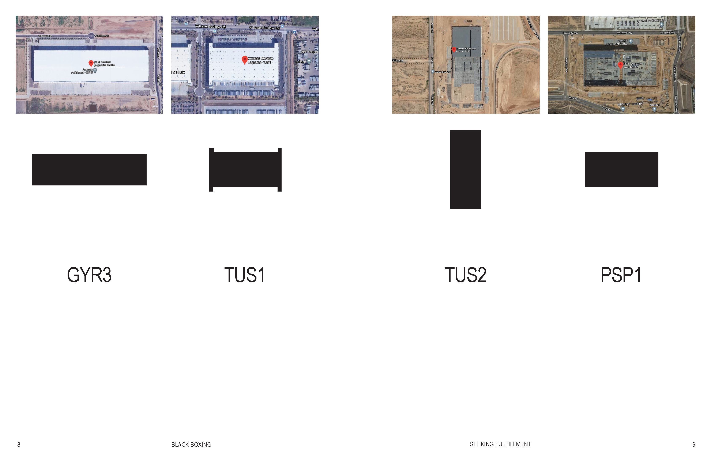
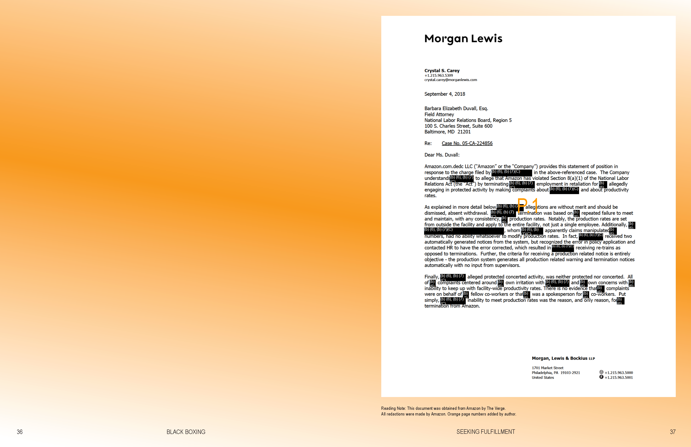
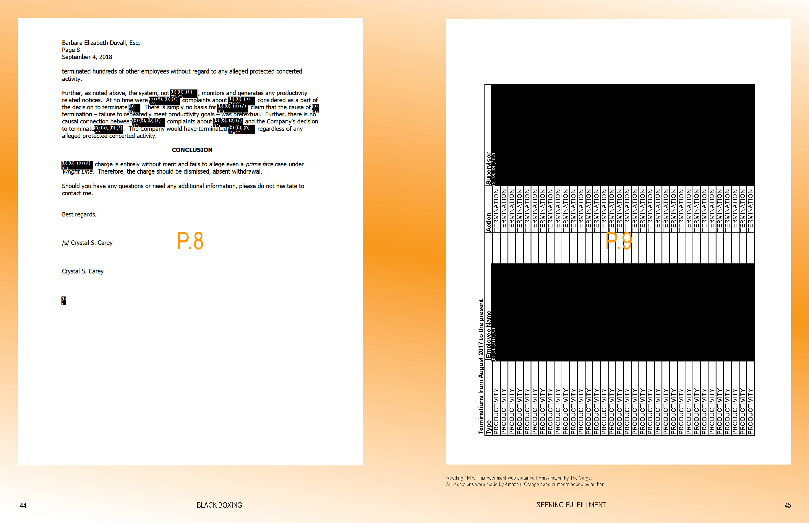
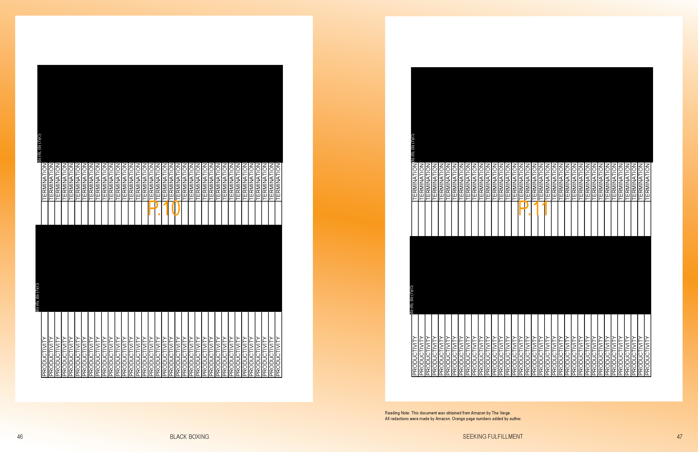
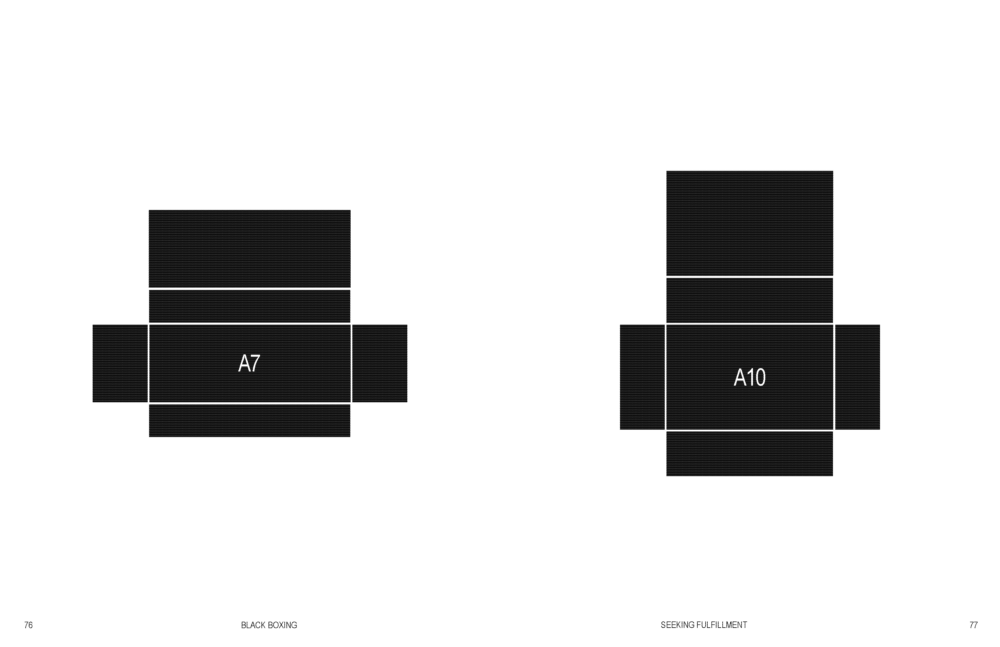
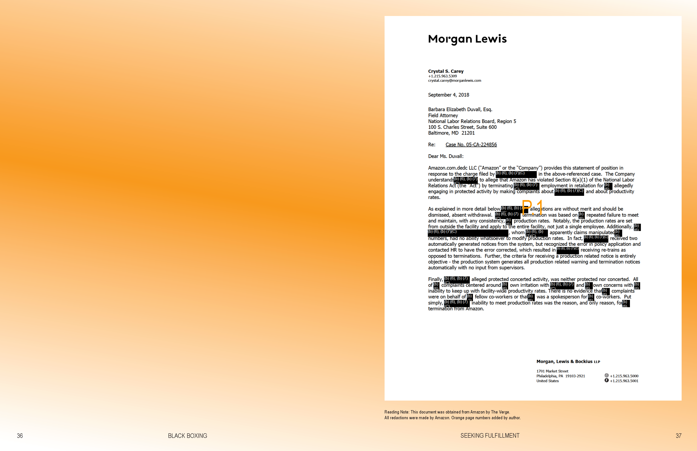
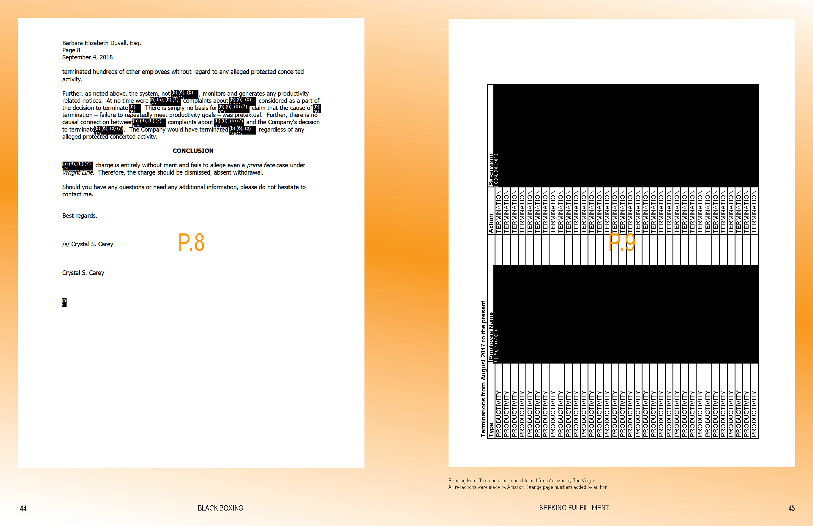
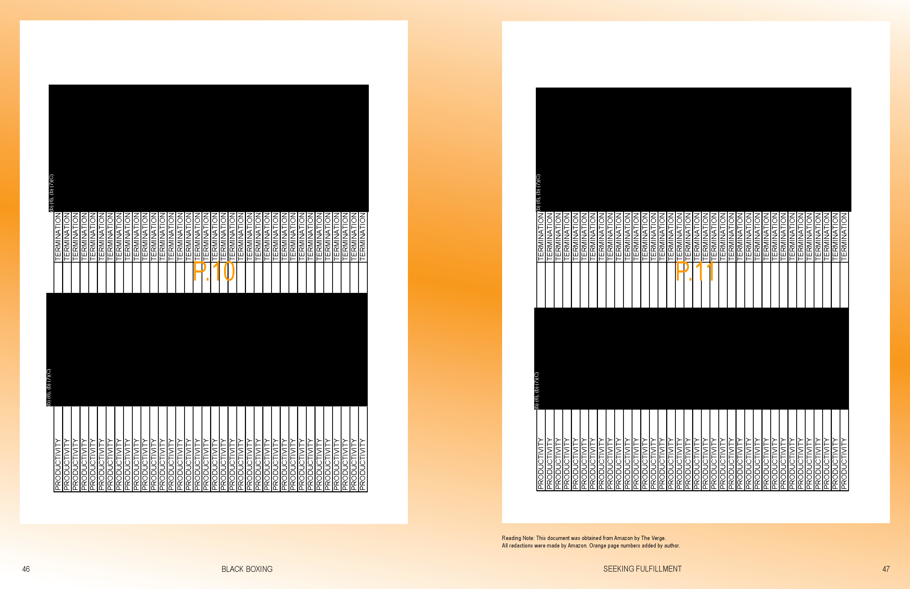
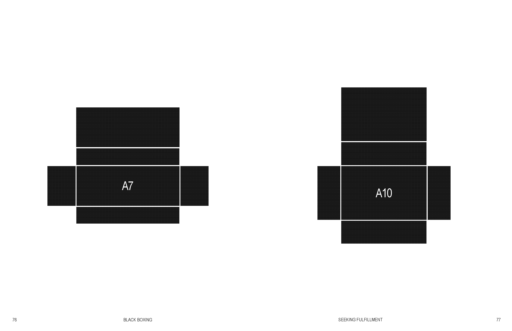

Jettisoning the Frame:
Strategies for Designing at the Threshold
23 may 2021
Threshold of Detectability


 









It is a project of excavating, unfolding and unravelling the hegemonies of a material practice deeply entrenched in our cultural, social, and daily contexts
Canlı, Ece. 2016. “Design History, Interrupted: A Queer-Feminist Perspective.”